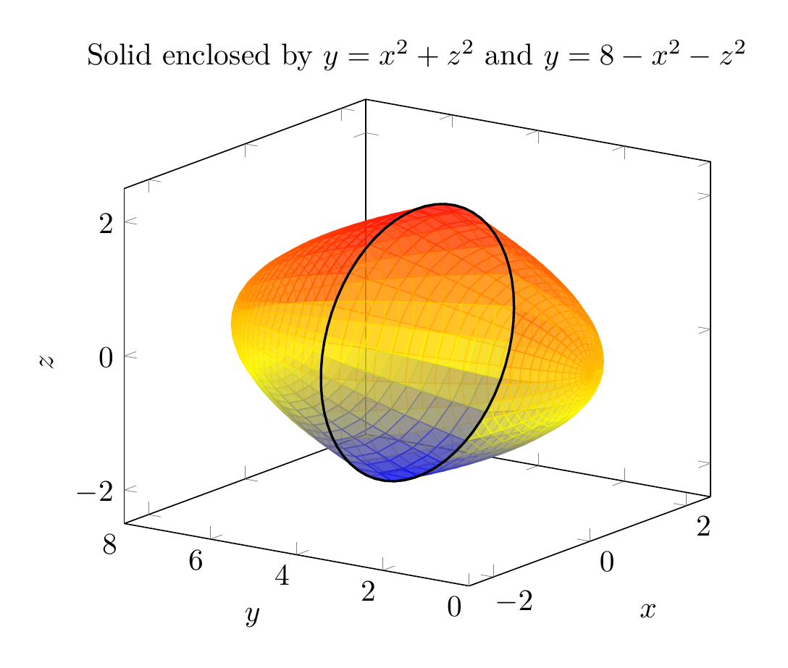
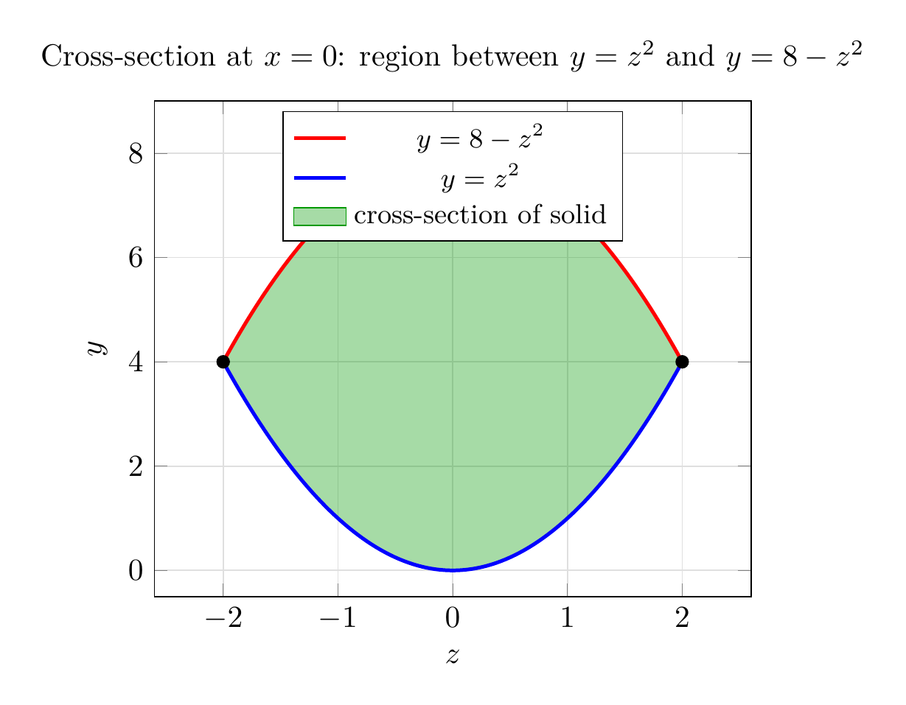

Please solve the problem in the following image.
(Image `20260928_223758_777057_utc_0800_0.png`. Alt text: Image: human_20260928_223758_777057_utc_0800)
20260928_223758_777057_utc_0800_0.png
End of problem
Answer
# Volume Between Two Paraboloids via a Triple Integral
**Problem.** Use a triple integral to find the volume of the solid enclosed by the paraboloids $y = x^2 + z^2$ and $y = 8 - x^2 - z^2$.
## Step 1: Understand the geometry
Both surfaces are paraboloids whose axis is the $y$-axis:
- $y = x^2 + z^2$: opens in the $+y$ direction, vertex at the origin (the **lower** boundary).
- $y = 8 - x^2 - z^2$: opens in the $-y$ direction, vertex at $(0, 8, 0)$ (the **upper** boundary).
The solid is the "lens-shaped" region between them, shown below in 3D:
---
\documentclass[border=10pt]{standalone}
\usepackage{pgfplots}
\pgfplotsset{compat=1.18}
\begin{document}
\begin{tikzpicture}
\begin{axis}[
view={-55}{18},
xlabel={$x$}, ylabel={$y$}, zlabel={$z$},
xmin=-2.5, xmax=2.5, ymin=0, ymax=8, zmin=-2.5, zmax=2.5,
domain=0:2, y domain=0:360,
samples=25, samples y=25,
colormap/hot,
title={Solid enclosed by $y=x^2+z^2$ and $y=8-x^2-z^2$}
]
% Lower paraboloid y = x^2 + z^2 = r^2
\addplot3[surf, shader=flat, opacity=0.6]
({x*cos(y)}, {x^2}, {x*sin(y)});
% Upper paraboloid y = 8 - x^2 - z^2 = 8 - r^2
\addplot3[surf, shader=flat, opacity=0.6]
({x*cos(y)}, {8-x^2}, {x*sin(y)});
% Rim circle r = 2, y = 4
\addplot3[black, thick, domain=0:360, samples=60]
({2*cos(x)}, {4}, {2*sin(x)});
\end{axis}
\end{tikzpicture}
\end{document}

pgfplots_0.png
---
## Step 2: Find where the surfaces intersect
Set the two expressions for $y$ equal:
$$
x^2 + z^2 = 8 - x^2 - z^2 \;\Longrightarrow\; 2(x^2 + z^2) = 8 \;\Longrightarrow\; x^2 + z^2 = 4.
$$
The two surfaces meet along the circle $x^2 + z^2 = 4$ in the plane $y = 4$. So the **shadow** (projection) of the solid onto the $xz$-plane is the disk $D: x^2 + z^2 \leq 4$.
## Step 3: Set up the triple integral
The volume is
$$
V = \iiint_E dV = \iint_D \left[ \underbrace{(8 - x^2 - z^2)}_{\text{upper } y} - \underbrace{(x^2 + z^2)}_{\text{lower } y} \right] dA = \iint_D \left( 8 - 2x^2 - 2z^2 \right) dA.
$$
This 2D setup is easiest to see in a cross-section. At $x = 0$ (the $yz$-plane), the solid's slice is the region between $y = z^2$ and $y = 8 - z^2$, from $z = -2$ to $z = 2$:
---
\documentclass[border=10pt]{standalone}
\usepackage{pgfplots}
\pgfplotsset{compat=1.18}
\usepgfplotslibrary{fillbetween}
\begin{document}
\begin{tikzpicture}
\begin{axis}[
xlabel={$z$}, ylabel={$y$},
xmin=-2.6, xmax=2.6, ymin=-0.5, ymax=9,
domain=-2:2, samples=100,
grid=major, grid style={gray!25},
legend style={at={(0.5,0.98)}, anchor=north, font=\small},
title={Cross-section at $x=0$: region between $y=z^2$ and $y=8-z^2$}
]
% Shaded region between
\addplot[name path=upper, red, very thick] {8-x^2};
\addlegendentry{$y = 8-z^2$}
\addplot[name path=lower, blue, very thick] {x^2};
\addlegendentry{$y = z^2$}
\addplot[green!60!black, fill opacity=0.35] fill between[of=upper and lower];
\addlegendentry{cross-section of solid}
% Intersection points
\addplot[only marks, mark=*, black] coordinates {(-2,4) (2,4)};
\end{axis}
\end{tikzpicture}
\end{document}

pgfplots_1.png
---
## Step 4: Convert to polar coordinates
Since the shadow $D$ is a disk and the integrand depends only on $r = \sqrt{x^2 + z^2}$, use polar coordinates in the $xz$-plane:
$$
x = r\cos\theta, \quad z = r\sin\theta, \quad x^2 + z^2 = r^2, \quad dA = r\,dr\,d\theta, \quad 0 \leq r \leq 2,\; 0 \leq \theta \leq 2\pi.
$$
Then
$$
V = \int_0^{2\pi}\!\!\int_0^2 \left( 8 - 2r^2 \right) r \, dr \, d\theta.
$$
## Step 5: Evaluate
**Inner integral:**
$$
\int_0^2 (8r - 2r^3)\, dr = \left[ 4r^2 - \frac{r^4}{2} \right]_0^2 = 16 - 8 = 8.
$$
**Outer integral:**
$$
V = \int_0^{2\pi} 8 \, d\theta = 8 \cdot 2\pi = 16\pi.
$$
## Verification
- **Cartesian check:** computing $\displaystyle\int_{-2}^{2}\!\!\int_{-\sqrt{4-x^2}}^{\sqrt{4-x^2}}\!\!\int_{x^2+z^2}^{8-x^2-z^2} dy\,dz\,dx$ with a computer algebra system also gives exactly $16\pi$. ✔
- **Sanity check:** the solid sits over a disk of area $\pi(2)^2 = 4\pi$, with average height $\tfrac{1}{2}(8) - 0 = 4$ by symmetry of the two paraboloids, giving roughly $4\pi \times 4 = 16\pi$. ✔
## Key takeaways for this kind of problem
1. **Match surfaces to their axis.** Here $y$ is isolated on the left, so the paraboloids open along the $y$-axis, and the natural "shadow" plane is the $xz$-plane (not the usual $xy$-plane).
2. **Intersect the surfaces** to find the rim curve and the projection region $D$.
3. **Integrate top minus bottom** over $D$: $V = \iint_D (y_{\text{upper}} - y_{\text{lower}})\,dA$.
4. **Choose coordinates matching the symmetry of $D$.** A circular shadow with a radially symmetric integrand calls for polar (here, $rz$ would also work) coordinates — don't forget the Jacobian factor $r$.
$$
\boxed{V = 16\pi}
$$